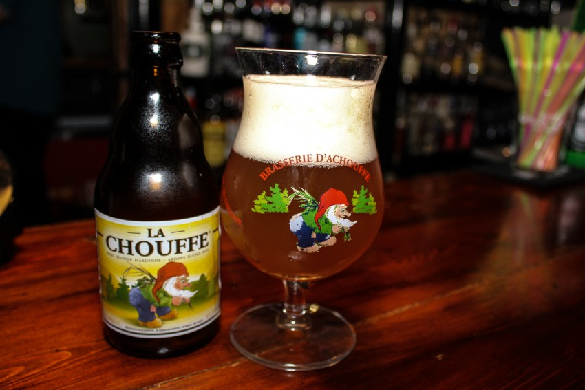
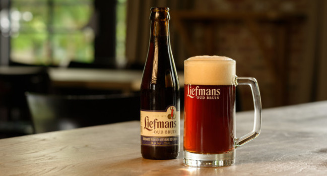
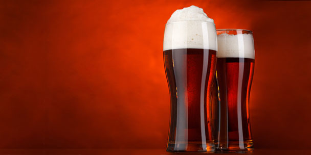
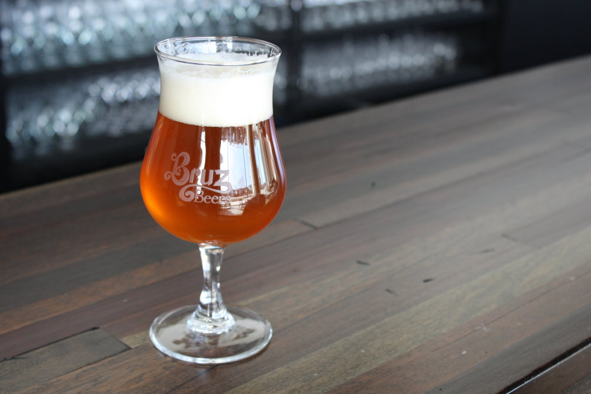
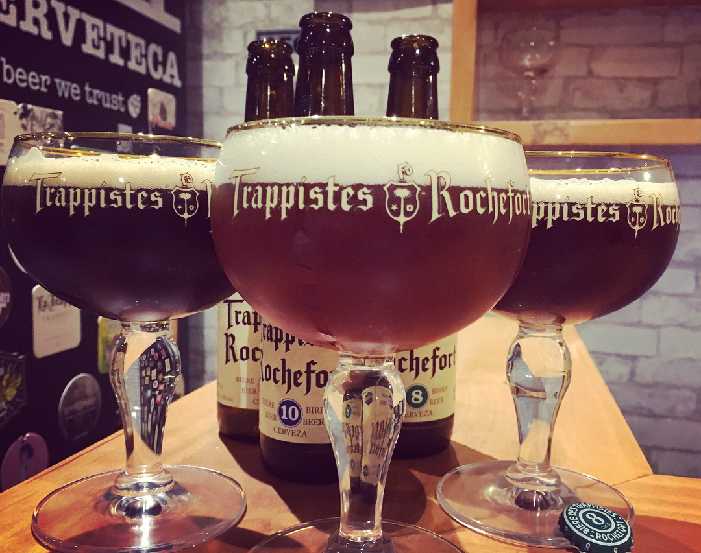
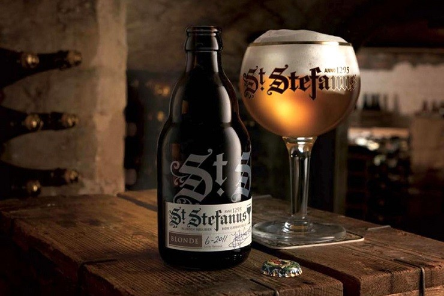
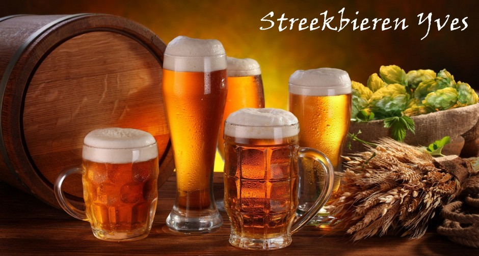

ESTILO BELGA
ALE BELGAS

{kind=link}
Casi todas las cervezas especiales belgas son de fermentación alta, por lo que deberían denominarse ales, pero en Bélgica no siempre se les etiqueta así. Muchas veces sólo en las destinadas a la exportación se incluye la palabra ale. Existe sin embargo un grupo de cervezas que en Bélgica sí se conocen como ales y que tienen características similares a un grupo de cervezas elaboradas en distintas partes del mundo. Es el grupo de las pale ale británicas, las altbier de Dusseldorf y las ale de la costa oeste de Estados Unidos, todas de fermentación alta y color dorado oscuro.
En Bélgica se producen en las zonas de Amberes, Brabante y Valonia y son cervezas de color ámbar rojizo o cobre, de una densidad media, contenido alcohólico alrededor del 5%, suaves y afrutadas.
También existe otro grupo de cervezas que se podrían incluir en este apartado; se trata de las hechas en el estilo de las scotch ale británicas. Son fuertes, oscuras y con fuerte sabor a malta. Estas cervezas en algunas ocasiones son elaboradas en Bélgica por productores belgas, otras veces se hacen bajo licencia de algún productor británico y otras son hechas en Gran Bretaña exclusivamente para el mercado belga, no estando a la venta en el mismo país que las elabora.
ALE TOSTADA

{kind=link}
Su nombre en flamenco es Oud bruin, que se traduciría como (cerveza) “añeja color castaño” y que deriva de su color tostado y de la mezcla de cervezas jóvenes y viejas que tradicionalmente se realiza para su elaboración. Además, algunas de ellas mejoran después de un “envejecimiento” de uno o dos años desde que salen a la venta.
Es un estilo típico de la zona del este de Flandes, especialmente de la ciudad de Oudenaarde que es donde se encuentran los productores mas representativos.
Suelen tener de un 5 a un 6 % de alcohol, son de color marrón tostado y con un sabor intenso y agridulce. Algunos productores de la zona utilizan este tipo de cerveza como base para elaborar sus cervezas de cerezas y frambuesas, al igual que los productores del area de Bruselas utilizan la lambic como base para sus cervezas de frutas.
ALE ROJA

{kind=link}
Este estilo se elabora casi exclusivamente en el oeste de la región de Flandes, en Bélgica. Su color rojizo se debe al tipo de malta utilizado en su elaboración. Son cervezas relativamente ligeras de cuerpo y muy ácidas, lo que las hace ser muy refrescantes. Al igual que las anteriores también se elaboran con una mezcla de cervezas viejas y jóvenes, pero a diferencia de ellas, las rojas maduran posteriormente en grandes cubas de madera durante más de año y medio. Algunos productores añaden esencias de cerezas a esta cerveza, creando unas cervezas muy especiales, con un carácter un poco dulce y ácido al mismo tiempo.
ALE DORADA FUERTE

{kind=link}
Cuando en los años 50 y 60 se popularizaron en Bélgica las cervezas doradas tipo pilsen, algunos productores empezaron a experimentar en la dirección del color dorado de éstas. A finales de la década de los años 60, un productor belga que en esa época hacía una cerveza ale, oscura y muy fuerte, decidió cambiarle el color y presentarla con un color dorado claro. El resultado fue una cerveza de fermentación alta, con gran contenido alcohólico y de color dorado. La enorme popularidad de ésta cerveza con aspecto de lager dorada, hizo que otros productores belgas empezaran a hacer cervezas con características similares, dando origien a un estilo único. Suelen tener más de 8 % de alcohol, son afrutadas, con mucha espuma y secas.
SAISON - DE TEMPORADA

La mayor parte de los países productores de cerveza han elaborado tradicionalmente cervezas de temporada, bien para celebrar ocasiones especiales como puede ser la Navidad o bien por la necesidad de producir cerveza antes de que llegara el verano, cuando no existía refrigeración artificial. Estas cervezas han ido desarrollando con el tiempo unas características especiales que les hace formar parte de estilos únicos.
La saison, o cerveza de temporada, es típica de la región de Valonia, en la zona de habla francesa del sur de Bélgica. Empezaron a elaborarse cuando los productores de esta zona veían que era defícil hacer cerveza durante el verano, ya que el calor hacía que ésta se estropeara. Para evitar que hubiese escasez en los meses de Julio a Septiembre cuando no se podía hacer, durante la primavera elaboraban una cerveza que era lo suficientemente robusta para que resistiera varios meses, pero no muy fuerte para que fuese una bebida refrescante de verano.
Normalmente tienen un color anaranjado, una espuma muy densa, son muy frescas, afrutadas y burbujeantes. Es tradicional la presentación en botellas de champagne o cava, con el mismo tipo de tapón de corcho.
TRAPENSE

{kind=link}
En Europa siempre ha existido una relación entre la iglesia católica y la elaboración de bebidas alcohólicas, donde muchos monasterios producían vino, cerveza o licores para consumo propio o para comercializar. Sin embargo, con el paso del tiempo la mayoría de estas actividades han desaparecido excepto en Bélgica y Holanda donde todavía sobreviven seis abadías trapenses que operan como elaboradores de cerveza con fines comerciales. Además de estas seis, existe un cierto número de abadías que no producen cerveza pero que encargan su elaboración a productores no religiosos o que dan una licencia para que otros productores no relacionados con la abadía utilicen su nombre para designar cervezas de un estilo determinado.
El término trapense se utiliza sólo para describir las cervezas hechas en uno de los seis monasterio trapenses que aún producen cerveza. Cinco de ellos están en Bélgica y uno en Holanda, donde entre todos producen unas 20 cervezas distintas bajo la supervisión directa y el trabajo de los propios monjes.
Aunque cada cerveza trapense tiene sus propias características, casi todas comparten una serie de rasgos comunes. Son de fermentación alta, con una segunda fermentación en botella, relativamente fuertes, entre 5 y 11% de alcohol y son afrutadas. En cuanto a las diferencias, hay algunas secas, pero la mayoría son dulces; unas son doradas y pálidas y otras oscuras.
Algunas de ella se subtitulan con los términos “dubbel” o “tripel”. En la mayoría de los casos, sobre todo en Bélgica, las llamadas “dubbel” representan una cerveza trapense o de abadía oscura y dulce de unos 6 ó 7 grados, mientras que una “trippel” representa a una más pálida y seca de unos 8 ó 9 grados.
DE ABADÍA

{kind=link}
Ya que sólo las cervezas elaboradas en los monasterios trapenses pueden denominarse “trapenses”, se aplica el término “de abadía”, a todo un grupo de cervezas inspiradas en su elaboración en las trapenses. En algunos casos éstas cervezas se hacen en monasterios o abadías que en el pasado elaboraban cerveza y que ahora encargan a algún productor no vinculado a la iglesia que se la produzca. Otras abadías dan licencia a algunos productores para que utilicen su nombre. También es común utilizar el nombre de alguna iglesia o santo para dar nombre a la cerveza.
ESP. REGIONALES

{kind=link}
Existe un cierto número de cervezas belgas que no se corresponden con ningún estilo en particular, sino que cada productor o cada región produce una serie de cervezas con unas características propias y muchas veces únicas.
Este sería el caso por ejemplo de cervezas elaboradas al gusto particular de un productor; otras veces por la utilización de ingredientes locales o utensilios y maquinaria especiales. Esto hace que muchas veces estas cervezas sean únicas, sin posibilidad de incluirlas en algún grupo. En Flandes a veces se les identifica con el nombre flamenco de “streekbieren” o cervezas de la zona o región.
En este grupo de especialidades podríamos incluir las cervezas con especias, llamadas “kruidenbier” en flamenco. Normalmente se utiliza un ale como base a la que se añade una pequeña cantidad de canela, jengibre, cilantro u otro condimento. Es tradicional en Navidad que muchos productores saquen al mercado cervezas de este tipo.
También en este grupo pueden incluirse las cervezas con miel, las cervezas muy fuertes y otras cervezas de las regiones de Flandes y Valonia con características específicas de cada productor.